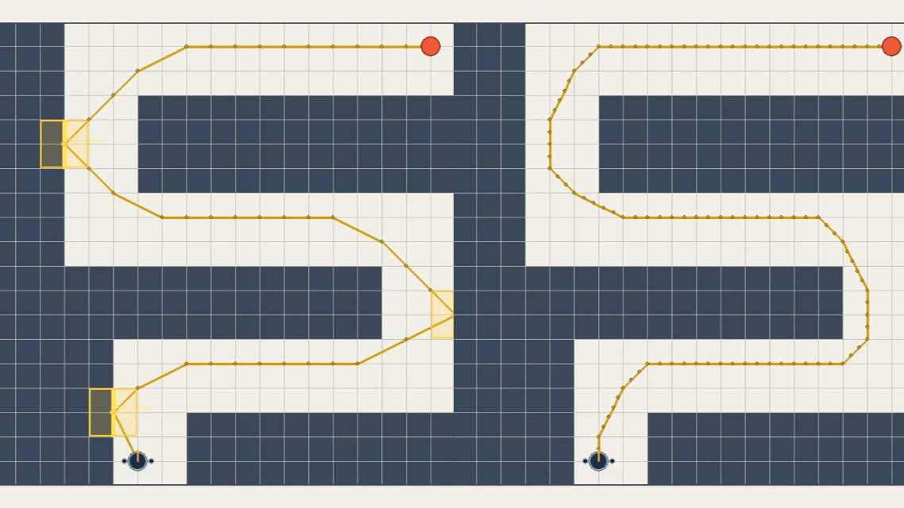
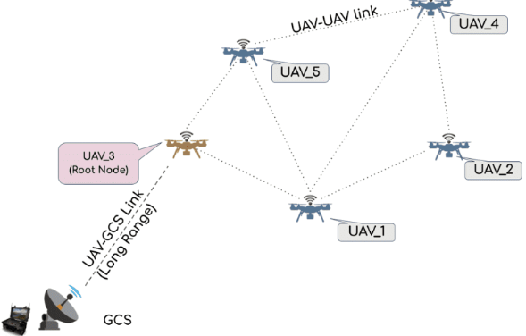

Subhadeep Koley
I'm a third year Computer Science PhD student at Lehigh University, advised by Prof. David Saldaña.
I've worked on physical human-robot interaction with blimps and on path planning algorithms for collision tolerant robots. Before that, I built decentralized swarm software at IIT Kanpur and worked on multi-robot pursuit-evasion at with Dr. Guillaume Adrien Sartoretti at NUS.. Apart from these, I am interested in learning-based control and on navigating unknown environments with legged robots.
I'm looking for research internships for Summer 2027 in aerial robotics, human-robot interaction, and robot learning.

Selected publications
Full list on Google Scholar.

Subhadeep Koley, Benjamin Greenberg, Yifei Simon Shao, Juan Aceros, Nadia Figueroa , David Saldaña
Under review, 2026
A blimp works out where a person wants it to go, and how to get there, from pushes, voice commands, and pointing. Combining pushes and voice identified the intended goal 86% of the time, usually within two interactions, and can steer the blimp around obstacles only the person knows about.

images/wall_bounce.pngSubhadeep Koley, Subhrajit Bhattacharya , David Saldaña
Under review, 2026
A planner that lets collision-tolerant robots bounce off walls on purpose, grouping paths by the sequence of walls they hit. In simulation, the best bouncing path cut control effort by a median 16.6% compared with a collision-free path, even though it was longer.

Yizhuo Wang, Yuhong Cao, Jimmy Chiun, Subhadeep Koley, Mandy Pham, Guillaume Adrien Sartoretti
Conference on Robot Learning (CoRL), 2024
A learned policy lets a team of robots coordinate to find and track evaders in unknown environments.

Ajit Das, Saumendra Nath Mishra, Subhadeep Koley, Sourav Sarkar, Achintya Mukhopadhyay, Swarnendu Sen
IEEE Conference on Sustainable Energy and Future Electric Transportation (SEFET), 2023
Best Paper Award
Projects
Engineering work outside my publications.

images/drone_swarm.gifSPiN Lab, IIT Kanpur (SURGE research internship with Dr. Ketan Rajawat), 2023
Part of a 10-person team building ROS software for a swarm with no central controller, deployed on five real drones. I worked on:
- a mission framework supporting both leader-follower flight and independent per-drone missions (video)
- decentralized leader election, so the swarm picks a new leader if the current one fails
- inter-drone collision avoidance, tested under motion capture
- network monitoring and congestion control for the swarm's mesh network
News
| Oct 2026 | Presenting HINT-Blimp, our work on physical human-robot interaction with blimps, at the Workshop on Nonverbal Cues for Human-Robot Cooperative Intelligence at IROS 2026 in Pittsburgh. |
| May 2025 | Attended ICRA 2025 in Atlanta and presented a live demonstration of MochiSwarm, our lab's open-source testbed of lightweight robotic blimps that operate as a swarm without external localization. |
| Nov 2024 | Our SwarmsLab team won first place at the Defend the Republic (DTR) drone competition at Indiana University, competing against teams including Georgia Tech, Michigan, and Arizona State. |
| Nov 2024 | ViPER presented at CoRL 2024 in Munich. |
| Aug 2024 | Started my PhD at Lehigh University with Prof. David Saldaña. |
| Aug 2023 | Won the Best Paper Award at IEEE SEFET for work on early detection of battery thermal runaway. |
| May 2023 | Started working on decentralized drone swarms with Dr. Ketan Rajawat at IIT Kanpur. |
| Dec 2022 | Joined EndureAir Systems as a flight software intern, working with the PX4 stack and building a MATLAB range-extension tool for a drop tank with delayed wing deployment. |